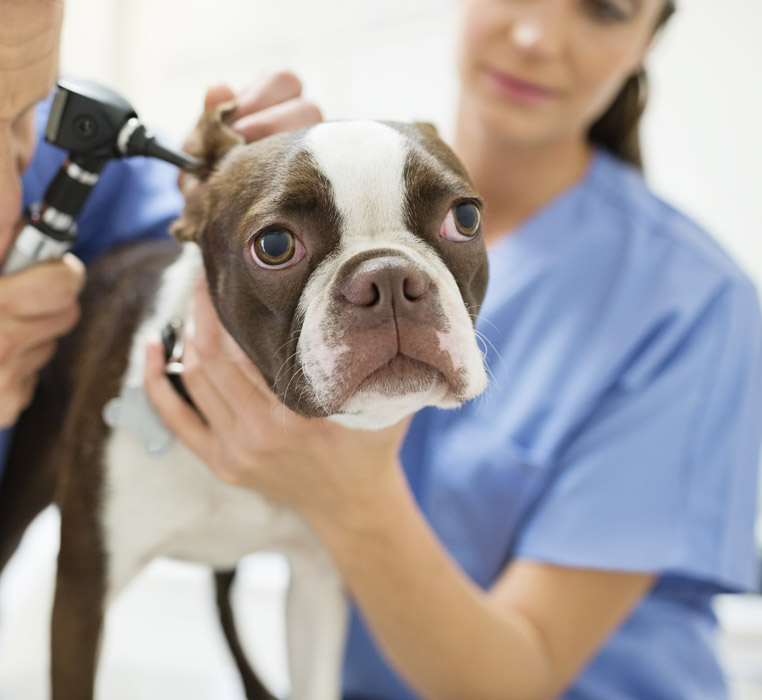

UN VÉTÉRINAIRE ORL À L’ÉCOUTE DE VOTRE ANIMAL
L’examen et la chirurgie de la sphère ORL nécessitent une véritable expertise dans la discipline.
En effet, l’otorhinolaryngologie fait appel à des connaissances et des techniques touchant à la fois la
dentisterie, l’orthopédie, des tissus mous de petite taille (microchirurgie) et l’endoscopie.

UNE UNITÉ ORL COMPLÈTE
L’activité ORL commence par une bonne observation.
Pour ce faire, un équipement de visualisation est indispensable : scanner et endoscope rigide ou souple.
Une fois l’observation et le diagnostic réalisés, un traitement est mis en place.
Ce traitement peut nécessiter des interventions complexes (paralysie laryngée, chirurgie de l’oreille
moyenne…) ou plus simples (otite externe, chirurgie du voile et du nez …)